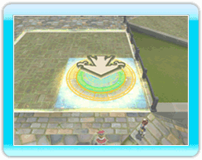

15 |
Construir y demoler |
 |
Puedes construir estructuras en cualquier lugar, pero siempre dentro de las murallas de la ciudad. Convoca a Chime cada vez que quieras construir una estructura.
|

２．Selección del tipo de edificio
Hay varias categorías de edificios para elegir, como "citizen shops" (tiendas de ciudadanos), "adventurer buildings" (edificios de aventureros), etc. Puedes cambiar de categoría pulsando izquierda o derecha en la cruz de control, y cambiar el tipo de edificio que deseas construir pulsando arriba y abajo en la cruz de control. |
３．Orientación del edificio
 |
４．Uso de elementite con el architek
|
Demolición de edificios
Llegado cierto punto del juego, podrás demoler cualquier edificio que hayas construido. Convoca a Chime y elige "Dismantle" (Demoler) en el menú para realizar esta acción. Los ciudadanos que vivan en el edificio demolido se mudarán provisionalmente a habitaciones vacías del castillo. Se instalarán definitivamente en el siguiente edificio del mismo tipo que se construya. Algunos miembros de la familia pueden cambiar durante este proceso. Nota: Todos los edificios pueden ser demolidos, salvo una casa residencial y el tablón de anuncios original. |
 |
 |
 |